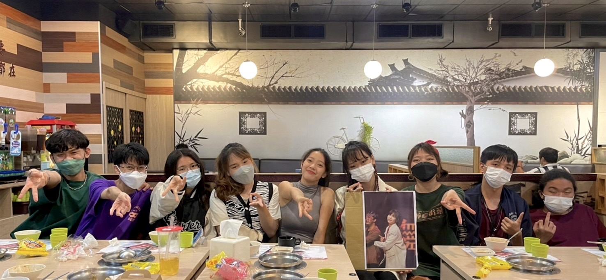

一路走來
- 家庭環境
- 去到高雄
- 街舞與我
接下來的故事或許有點傷感，或許有點令人難以置信，但這些無疑是我至今為止的一生。
自我有記憶以來，我便是一個沒有父親的孩子。升上小學時，我和母親一同搬到了屏東市區生活，當別人在自傳寫下:「我的父母自小如何教育我…」，而我卻只能很坦白的說，我的童年，沒有父母陪伴，只有孤獨和凌辱伴我。
在屏東市生活的那些年，母親總是忙於工作至半夜深更，然而她當時的同居人卻總趁她不在時，對我進行數不盡的凌辱和咒罵，對他來說這一切彷彿是娛樂遊戲，而對我說卻是不停歇的心靈折磨。
雪上加霜的是，年幼時的我也不擅於和他人打交道，在校也沒什麼朋友，甚至被同儕排擠過。
我的童年也因為這位同居人的關係，自幼我便接觸過黑道、通緝犯……社會最黑暗的一面，而這樣的生活一直到我高中，外婆有幫忙支助我生活上的所需才逐漸好轉。
然而即便童年時母親陪伴我的時間很少，但我知道，她這般努力的付出，操勞自己的身體，奉獻她的青春，將自己的一切都貢獻給我，就只是因為，她在履行自己身為一個母親的責任，我從不怨恨她給我的童年，若來生有幸，我還願意再做數次她的兒子。
母親一直以來對我都是採開放式教育，對於我人生規劃的每個決定她從不干涉，她總是盡力支持我，而因為她的支持，也造就我不願畫地自限，勇於挑戰自我的性格。
踏出舒適圈，是為了成就更好的自己。
國三畢業那年，我萌生了一個想法-我想挑戰自我，在和母親及師長的討論過後，我決定去到高雄求學。
於是一個年僅高一的孩子，就這樣隻身一人去到了一個不熟悉的大城市中生活，學習如何照顧自己，學習如何獨自面對困境，學習如何成為更好的自己。
勇於嘗試，造就了如此精采的回憶。
國中時期的我就對街舞充滿著興趣，但一直沒機會親身嘗試，直到高中，我才鼓足了勇氣踏出了第一步。
高一在學長姐的帶領下，我慢慢的扎實基本功，參與了各式大小不同的舞台表演。
高二時，我依然繼續在勁舞社中學習相關技巧，只不過這次的我多了些不同的身分， 我成了高一新生們的學長，也同時擔任了中正勁舞的文書兼器材幹部一職，擔任幹部的這一年裡，我與其他的四人，一起主辦了十七校聯合迎新，一起以幹部的身分帶領社團參加了各種不同大小的活動。
在這一年，除了學到舞蹈的技巧，更學到了如何帶領一個團體、如何權衡自己的能力、如何與其他共事的夥伴們分工、如何規劃活動......無法在一般課程所學到的經驗，擔任幹部的這段時期真的是令我收穫滿滿。
高三學測後，我進行了更多嘗試，不斷去接觸各種舞風、競賽，不斷的踏出新的一步，慢慢摸索出屬於自己的風格。
對我來說，跳舞，不僅是一個運動，它甚至帶給我磨練，也帶給我各種回憶及歡笑，跳舞已然成為我生命中不可分割的一部分。